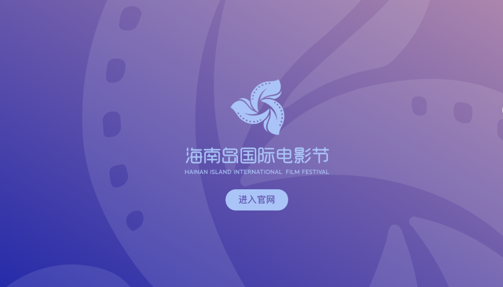

Project 03
第七届海南岛国际电影节
竞赛展映组｜统筹岗
项目封面

项目概览
项目时间
2025.11 – 2025.12
我的身份
竞赛展映组｜统筹岗
项目地点
海南 · 三亚
项目简介
海南岛国际电影节是国内具有国际影响力的电影文化交流平台， 汇聚来自世界各地的电影人、导演、制片人、媒体及观众。 作为竞赛展映组的一员， 我参与开闭幕式执行、 国际嘉宾接待及展映活动保障， 在国际化、多团队协作的环境中积累了大型文化活动现场统筹经验。
我的工作
开闭幕式执行
参与电影节开幕式、闭幕式及相关活动的现场执行，配合现场组、新闻组及晚宴组完成流程衔接，确保各环节按计划推进。
国际嘉宾接待
负责伊朗导演团队的全程接待工作，使用英语沟通行程安排、活动信息及现场需求，协调各环节衔接，保障团队顺利参与电影节各项活动。
展映活动运营
策划并协助落地影院观众互动环节，引导300余名观众参与现场活动，提升观影体验和现场互动氛围。
项目亮点
🎬 参与国际电影节核心活动执行
🌍 全程对接海外导演团队
👥 引导现场观众 300+ 人
🤝 多团队协作完成大型活动保障
我的收获
电影节与传统会议、展览最大的不同，在于它不仅需要保证活动流程顺畅，还需要兼顾国际嘉宾接待、媒体传播和观众体验。
通过这次实践，我提升了跨文化沟通能力、现场统筹能力以及面对高节奏活动环境时的应变能力，也更加理解了大型文化活动背后的协作机制。